The Great Mental Models of Artificial Intelligence
The ideas that taught machines to think
Lecture one — a love letter to the field, in fifteen ideas.
Scroll slowly ↓
In 1958, a psychologist named Frank Rosenblatt built a machine the size of a room that could learn to tell its left from its right. When it worked, the newspapers said it was the beginning of a computer that would one day walk, talk, see, and write itself into existence. People laughed. They were right to laugh — and, it turns out, they were wrong to.
This series is about the ideas underneath that long, strange, beautiful road. Not the equations — the ideas. It borrows a habit of mind that Farnam Street made famous: that you don't need ten thousand facts, you need a few dozen models that keep showing up everywhere you look.
Here is the claim I'll spend the whole series defending. Almost every great moment in artificial intelligence is one of fifteen ideas, wearing a new coat. Learn the fifteen, and history stops being a list of names to memorize. It becomes a set of moves — moves you can make yourself, the next time you face a problem no one has solved.
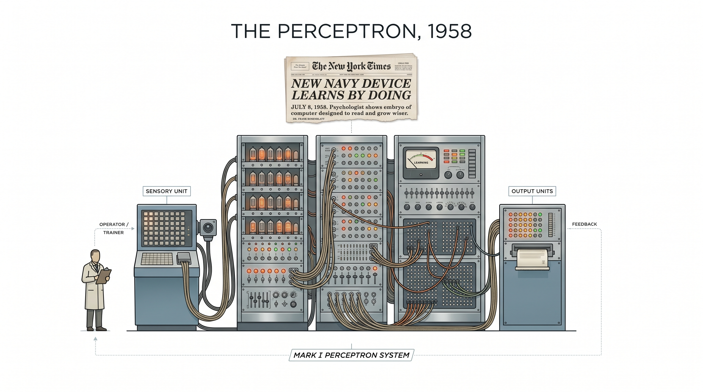
figure generating…
The journey, in five movements
I Learning — how we taught a machine to teach itself.
II Representation — how meaning gets turned into something a machine can hold.
III Generation & uncertainty — how a machine learns to create, and to live with not knowing.
IV Architecture & composition — how we build minds out of simple, repeated parts.
V Scale, reuse & practice — how all of it grows up and goes to work.
Volume I Learning
01
Gradient Handoff
When you can't write the rule, describe the goal — and let the gradient find it.
For thirty years we tried to write intelligence down by hand. Rosenblatt tuned his perceptron's weights one at a time, a human deciding each turn of the dial. It was slow, it was human, and it hit a wall. Then, in 1986, a small group — Rumelhart, Hinton, Williams — gave a clear voice to an old trick: don't write the rule, describe what "better" looks like and let the machine roll downhill toward it. That roll downhill is gradient descent.
Ever since, whenever we couldn't see the rule ourselves, we handed it to the gradient. We stopped writing equations. We started writing wishes — and trusting the slope to grant them.
Vision
We couldn't say what makes a cat a cat. So the network found the edges and whiskers itself. (LeCun's digit reader, 1989.)
Language
We couldn't write the rule for which words matter to which. So attention learned it. (The Transformer, 2017.)
Reasoning
We couldn't script the winning move. So AlphaGo played itself millions of times — and found moves no human had. (2016.)
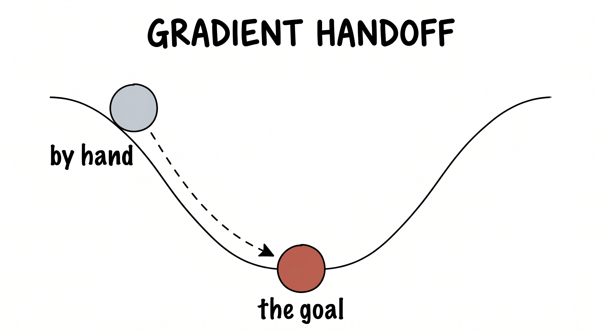
figure generating…
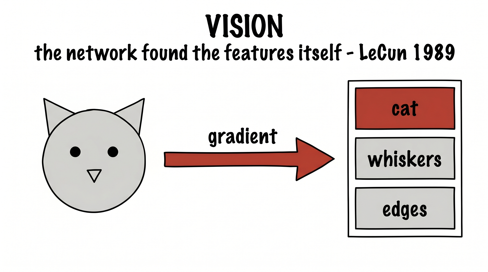
figure generating…
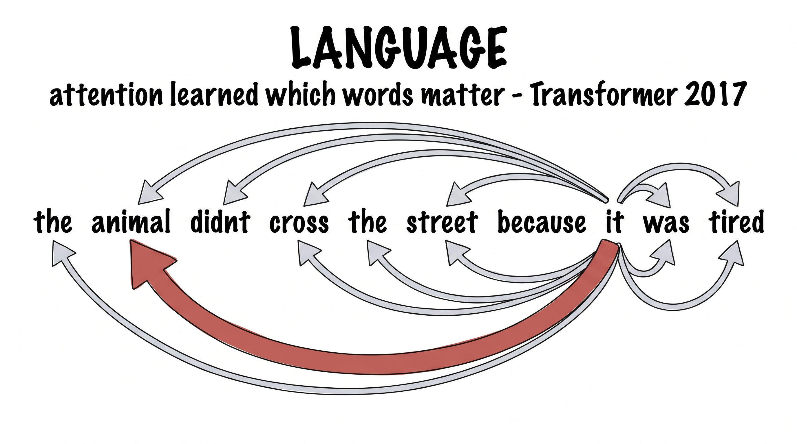
figure generating…
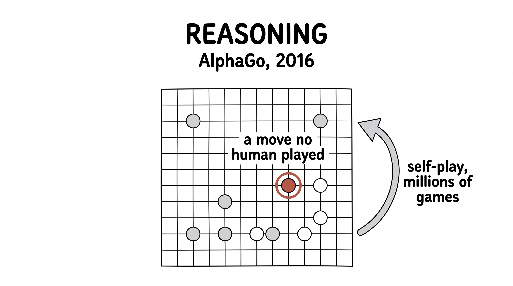
figure generating…
02
Predict the Part, Learn the Whole
Optimise a humble little task; the real understanding arrives as a side effect.
Here is a magic trick the field stumbled into. Hide the last word of a sentence and ask a machine to guess it. "The clouds drifted across the ____." To guess sky, and to keep guessing well across a trillion sentences, it has to quietly learn grammar, weather, geography, even a little poetry — the whole shape of a language.
We only ever asked for the next word. We got a model of the world for free. Every large language model alive today is this one humble trick, run at an unimaginable scale.
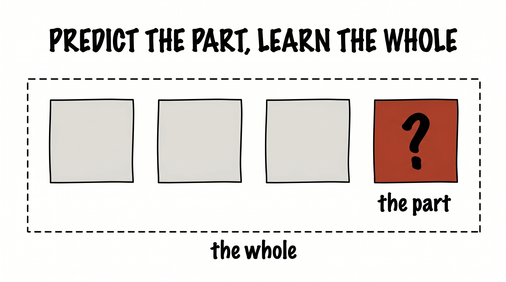
figure generating…
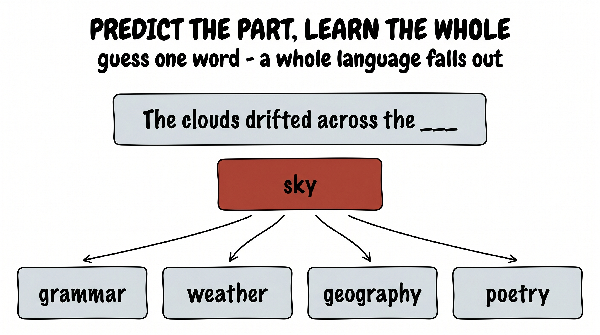
figure generating…
Volume II Representation
03
Everything Is a Vector
Turn anything into a point in space, and meaning becomes a distance you can measure.
In 2013, a team at Google did something that still feels like sorcery. They turned words into long lists of numbers — points in space — arranged so that king minus man plus woman landed almost exactly on queen. Meaning had become geometry. You could do arithmetic on ideas.
Soon images, sounds, and entire videos joined the same space. For the first time, a photograph and the sentence that describes it could be neighbours — close enough to find each other in the dark.
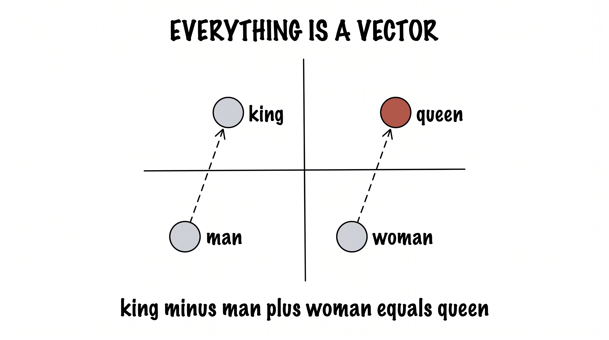
figure generating…
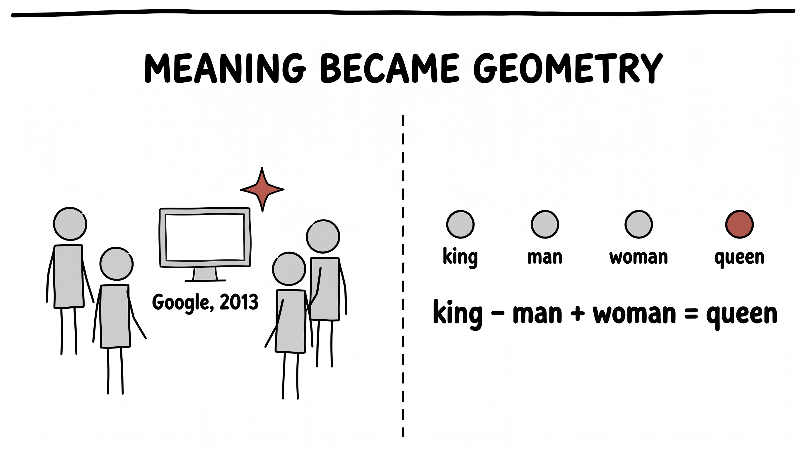
figure generating…
04
Compression
Force the world through a narrow gap; what survives is what mattered.
A good description is a short one. To squeeze a human face down to a few hundred numbers and rebuild it again, a machine has to throw away the freckles-that-don't-matter and keep the essence — the geometry of a face, not its pixels. That narrow gap in the middle is where understanding happens.
It is the quiet engine inside autoencoders, and the same instinct that let one modern lab shrink a model's memory to a fraction of its size without it losing its mind. To understand something deeply is, in the end, to be able to say it briefly.
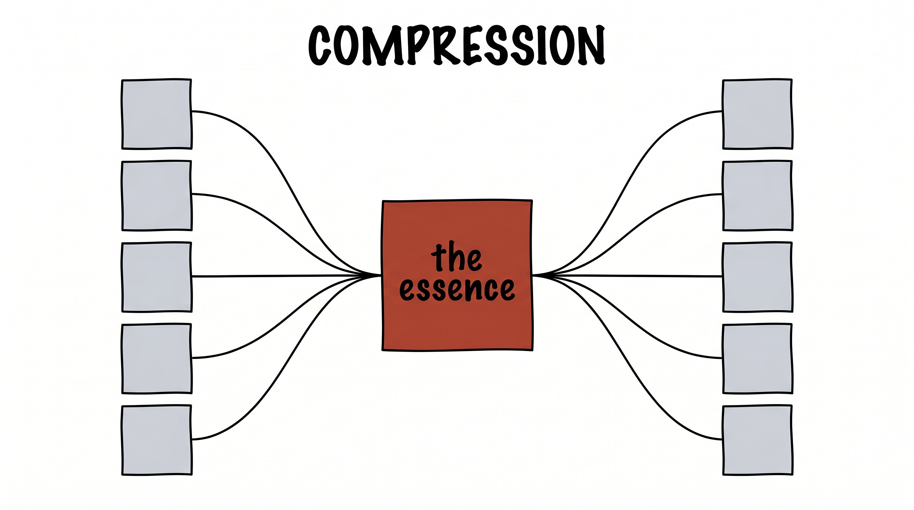
figure generating…
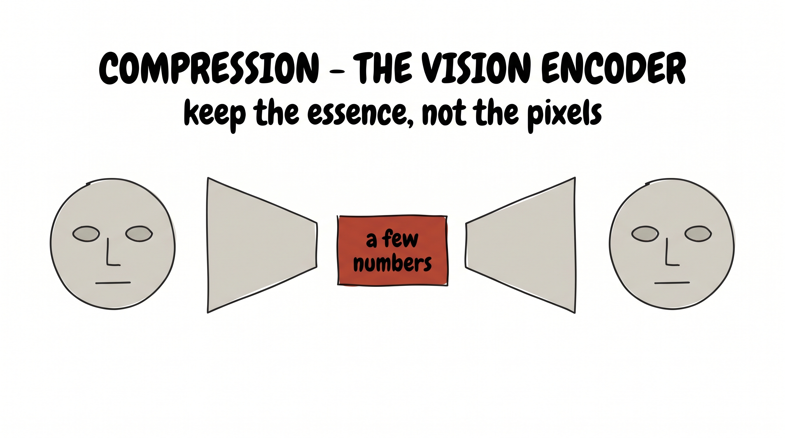
figure generating…
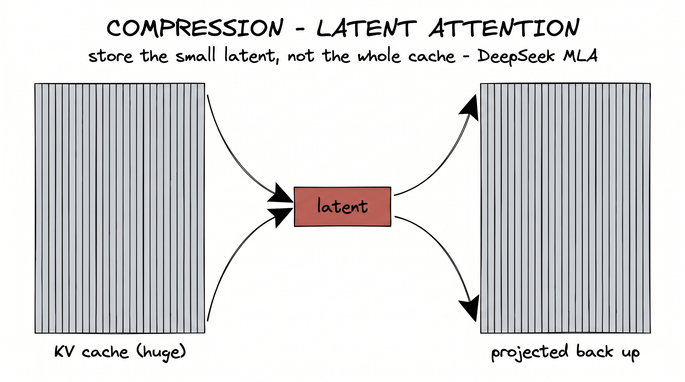
figure generating…
05
Expressivity
When the answer won't fit, go up a dimension — give the knot room to come undone.
Some problems simply cannot be solved on the page they're written on. Picture two tangled spirals of dots, impossible to separate with any straight line. Now lift them off the page into a higher dimension — and suddenly a flat sheet can slide cleanly between them. The knot was never really a knot. It just needed more room.
This is the mirror image of compression: where compression goes down to find the essence, expressivity climbs up to find the answer. A neural network spends its early layers doing exactly this — lifting the world into bigger rooms where the tangles fall apart.
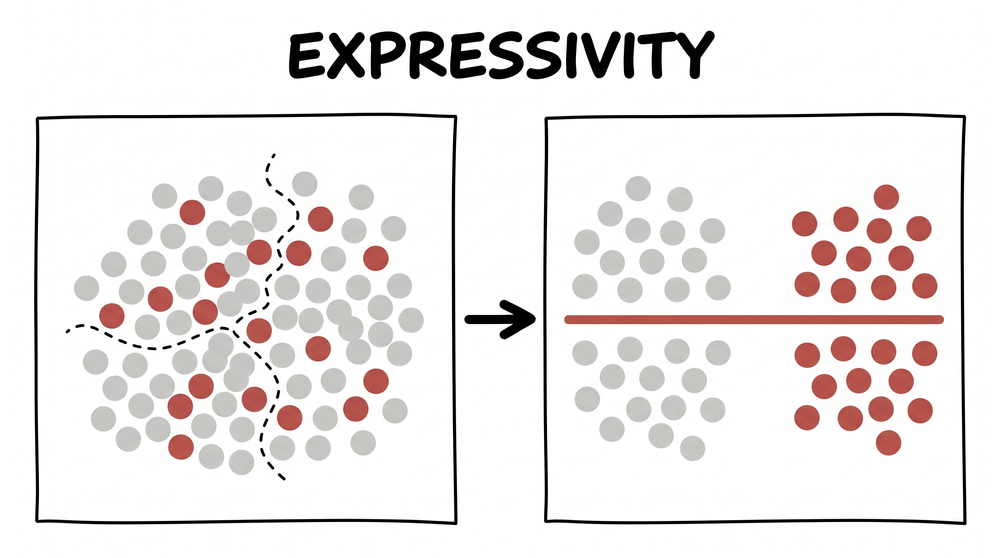
figure generating…
Volume III Generation & uncertainty
06
Reverse the Corruption
Learn to undo destruction, step by step, and you have secretly learned to create.
Take a photograph and add a little static. Add a little more. Keep going until nothing is left but snow — a screen of pure noise. Now teach a machine to undo just one step of that ruin. Do that well enough, and you can hand it a screen of pure noise and ask it to walk all the way back — into a photograph that never existed.
That is diffusion. Every image these models dream up is a storm being run, patiently, backwards into order.
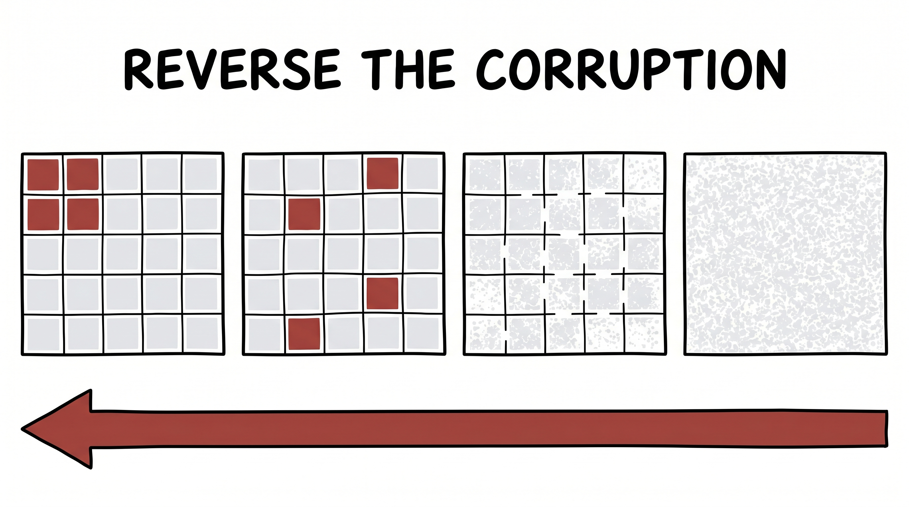
figure generating…
07
Pit Two Systems Against Each Other
Set two systems against each other, and let the arms race lift them both.
In 2014, over a beer, Ian Goodfellow had an idea: let a forger and a detective face off. One makes fake images; the other calls them out. Each one's failure becomes the other's lesson. Round after round, the forgeries get good enough to fool anyone alive.
That same duel is everywhere now — a model and its critic, a player and its own reflection, an answer and a challenge to it. Rivalry, it turns out, is one of the great teachers.
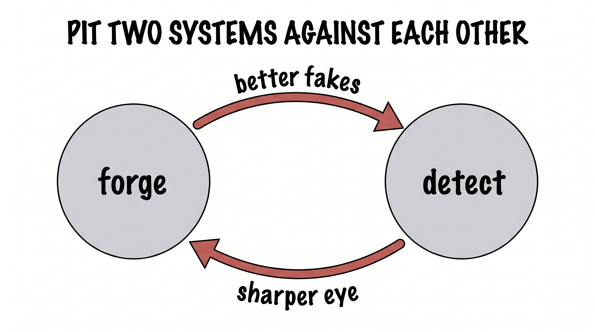
figure generating…
08
Entropy
Surprise is not a mood — it is a number, and you can turn the dial.
Every time a language model speaks, it rolls a loaded die. How loaded is set by a single knob borrowed straight from physics: temperature. Turn it down and the model becomes careful, predictable, a little dull. Turn it up and it gets surprising, strange, occasionally brilliant.
Entropy is just a measure of surprise. A century after Boltzmann named it for steam engines, the very same idea quietly governs how a machine chooses its next word.
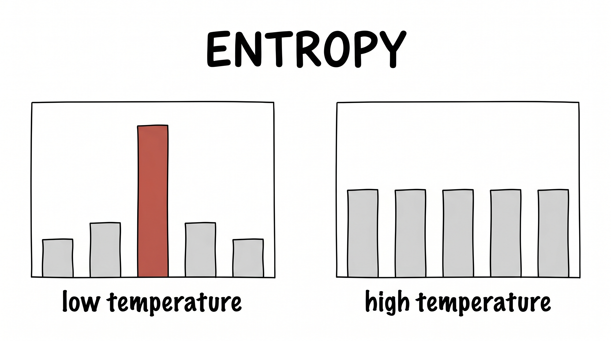
figure generating…
09
Everything Is a Distribution
Don't predict a point; predict a cloud, and carry your uncertainty with you.
A machine that quietly knows it might be wrong is worth more than one that is loudly, confidently certain. So modern AI rarely hands you a single answer. It hands you a cloud — a spread of possibilities, each with a confidence attached.
From that cloud you can sample a sentence, rank a diagnosis, or — most precious of all — admit that you simply don't know. It is doubt, made into mathematics.
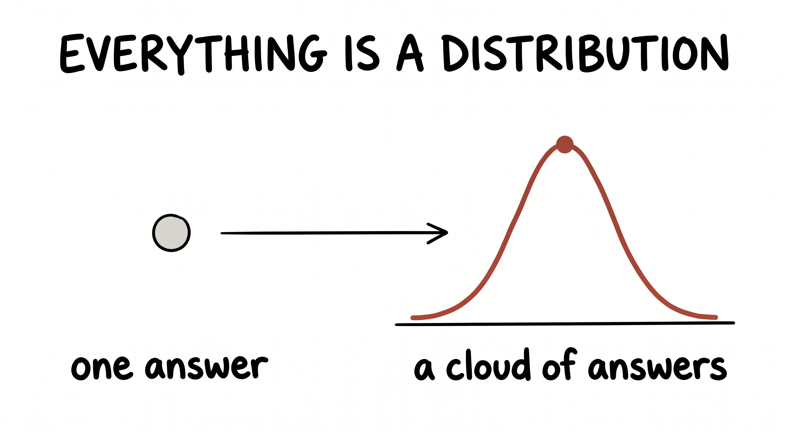
figure generating…
Volume IV Architecture & composition
10
Composition
Build minds the way nature does — simple parts, stacked into hierarchy.
The deepest idea in architecture is also the simplest one: stack. One small layer learns to see edges. Stack a second on top and it sees textures; a third, eyes and wheels; a fourth, whole faces and cars. Nothing in the stack is clever on its own. The intelligence lives in the height.
The Transformer — the engine of this entire era — is, at heart, one modest block, copied and stacked a hundred times. We did not design a mind. We designed a brick, and then we built upward.
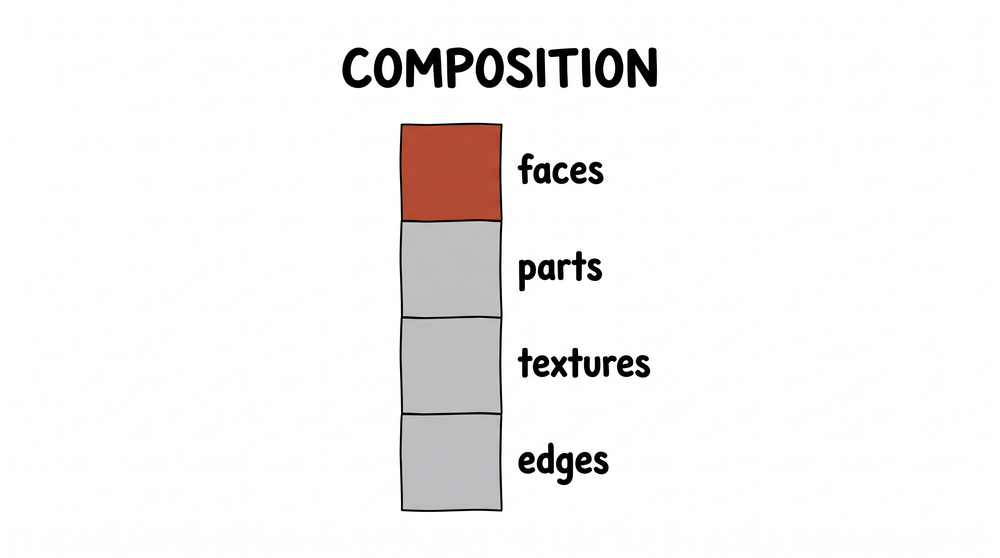
figure generating…
11
Specialization
Don't make everything do everything — route each problem to its specialist.
Why should every part of a brain do every job? The newest large models don't. They keep a quiet council of experts and, for each word that passes through, call on only the few who know best — a poet here, an accountant there, a grammarian for the comma.
Most of the model is asleep at any given moment. That is the trick that lets a system be enormous and fast at the very same time.
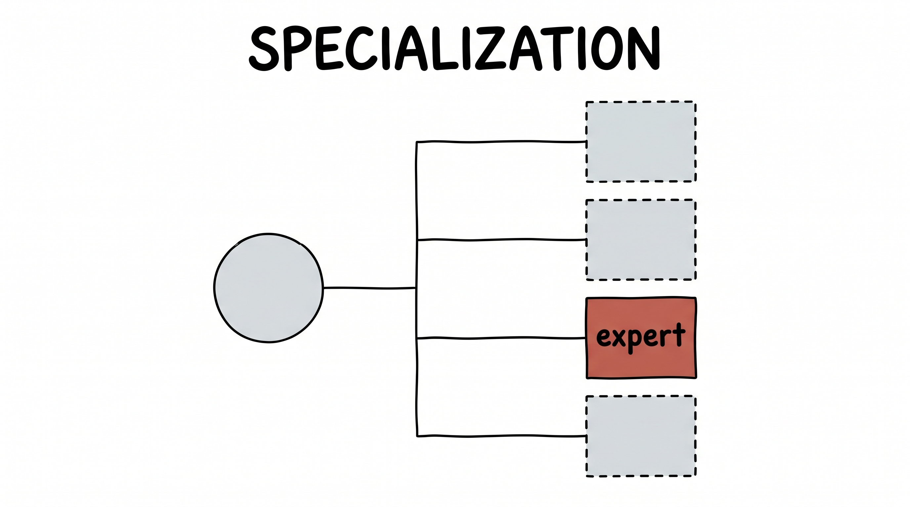
figure generating…
Volume V Scale, reuse & practice
12
More Is Different
Scale doesn't just improve a thing — past a threshold, it changes its kind.
For a long time, bigger only meant a little better. And then, past some invisible line, the models began to do things no one had trained them to do — follow instructions, reason in steps, translate languages they had barely seen.
The physicist Philip Anderson gave this its name in 1972: more is different. Enough water molecules don't make a bigger droplet; at some point they make ice. Quantity, pushed far enough, becomes a difference in quality.
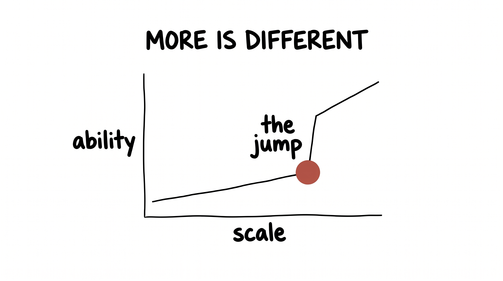
figure generating…
13
Learn Once, Adapt Everywhere
Pour everything into one base — then adapt it cheaply, forever.
It would be madness to raise a brand-new mind from scratch for every small task. So we don't. We train one enormous model on the whole library of the internet, once, at staggering cost — and then everyone adapts that single foundation with the gentlest nudge: a few examples, a short prompt, a light touch.
The hard, expensive part is paid exactly once. The rest of us simply inherit it. This is the quiet meaning of the phrase "foundation model."
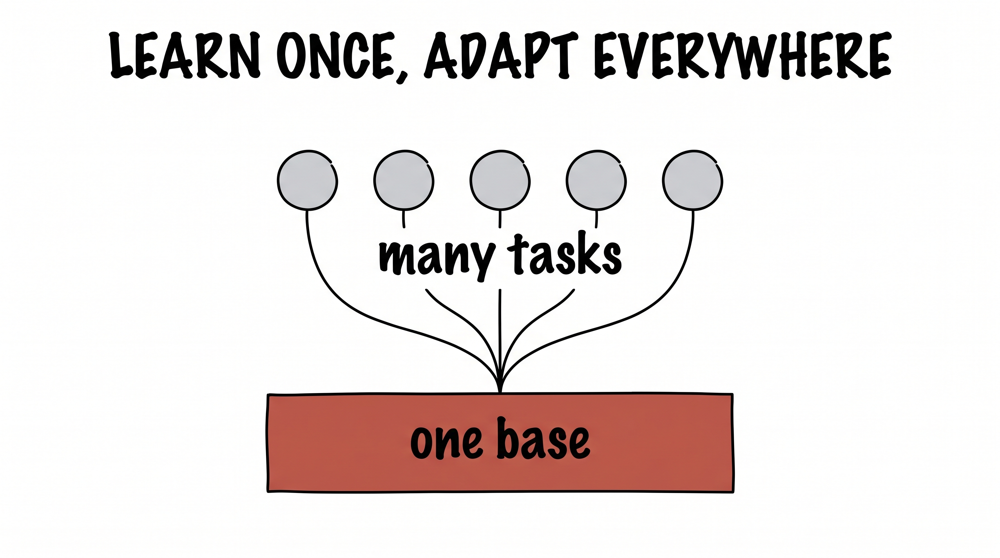
figure generating…
14
The Tea Kettle Principle
Don't solve the new problem — reduce it to one already solved.
There's an old joke about a mathematician. Asked to boil a kettle already full of water, he first pours the water out — so as to reduce the task to one he has solved before. AI does this constantly, and shamelessly.
To serve today's giant models quickly, engineers reached back for paging — a trick operating systems used to juggle memory in the 1960s. A brand-new problem, met with a fifty-year-old answer, lifted whole across the gap between two fields. The best move is often not invention. It is recognition.
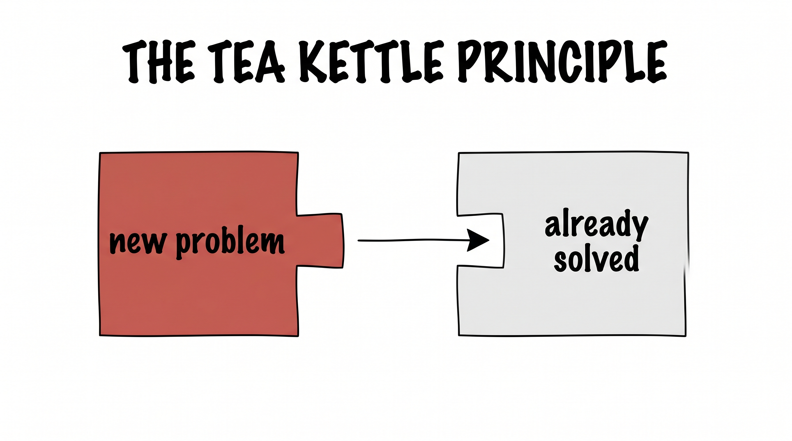
figure generating…
15
The Elephant and the Ship
There is no single right vantage point — collect perspectives until the whole appears.
Six blind men meet an elephant. One holds the trunk and says snake; one the broad leg, tree; one the ear, fan. Each man is honest. Each is wrong. And only together, with all their partial truths laid side by side, does the animal finally appear.
Every hard problem in AI — and every real project you will ever ship — is an elephant. The work is not to find the one true view. It is to gather enough partial views that the whole creature steps out of the dark.
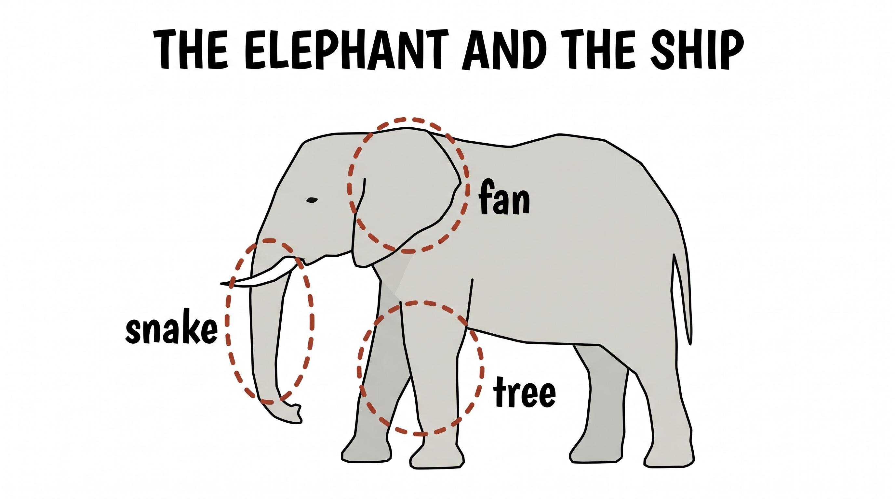
figure generating…
That is the map. Fifteen ideas, five movements, one long love affair with a single question: how does thinking work?
And here is what I hope you'll take from it. These are not facts to file away. They are tools. The next time you face a problem no one has solved — in your research, in your company, in a quiet notebook at midnight — you can run down the list and ask: is this a place to hand it to the gradient? To compress? To reverse a corruption? To reduce it to something already solved? The history of AI is not behind glass. It is a box of moves, and the box is open.
In the lectures to come we'll take them one at a time, slowly, with all the history and all the mathematics they deserve. But today I only wanted you to see the shape of the whole thing.